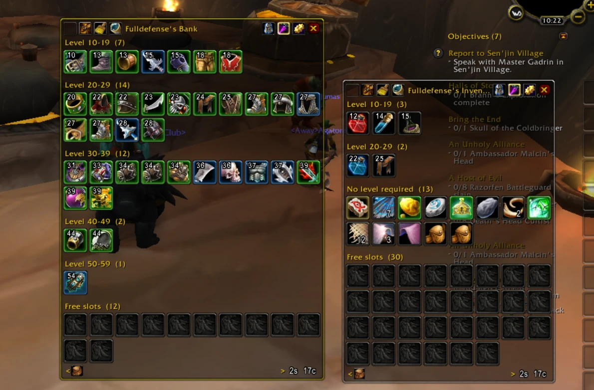
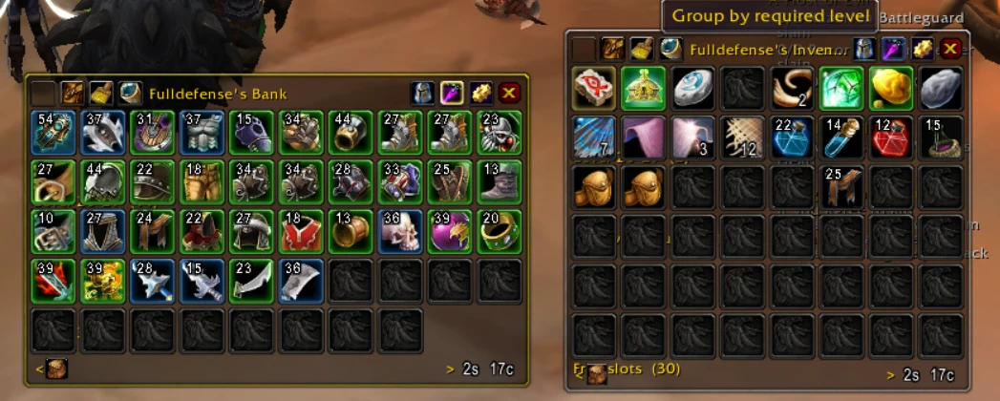
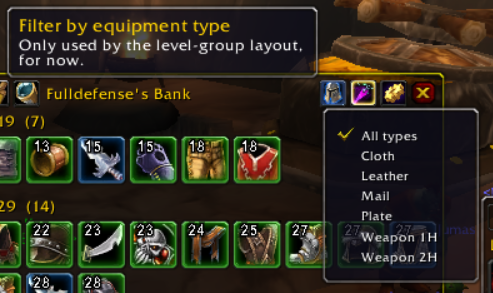

A small adaptation on top of the classic Bagnon (by Tuller), fixed to run on Grimfall's 3.3.5a client, with a level-based layout added on top to make gear organization easier while leveling.



Uma pequena adaptação em cima do Bagnon clássico (de Tuller), corrigido pra funcionar no cliente 3.3.5a do Grimfall, com uma visualização por nível adicionada por cima pra facilitar organizar o equipamento enquanto você sobe de nível.